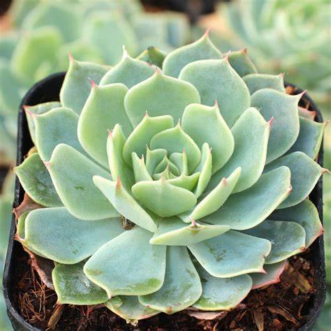

Plantas endemicas
Plantas
Echeveria subalpina

Echeveria subalpina
Una suculenta que forma rosetas compactas de hojas carnosas de color verde azuloso. Se distribuye en la Cuenca de Oriental y las regiones subalpinas del volcán Citlaltépetl, creciendo sobre roca ígnea en bosques de encino y matorral xerófilo
Ir al menu